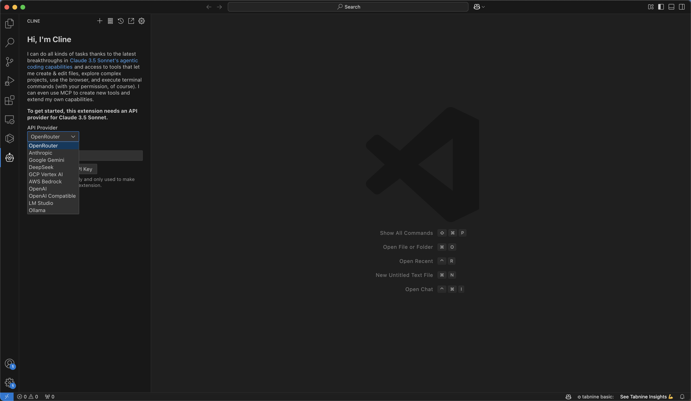
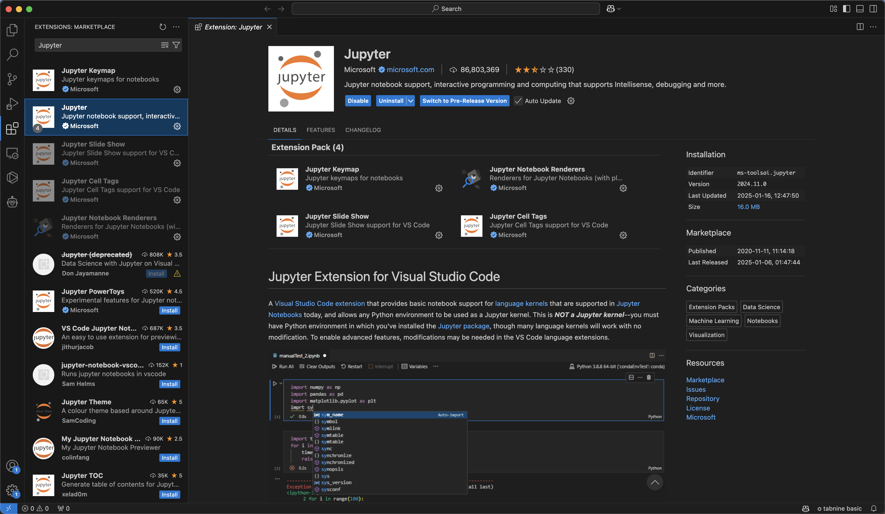
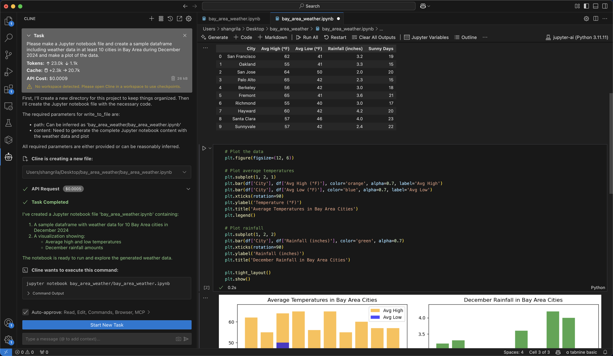
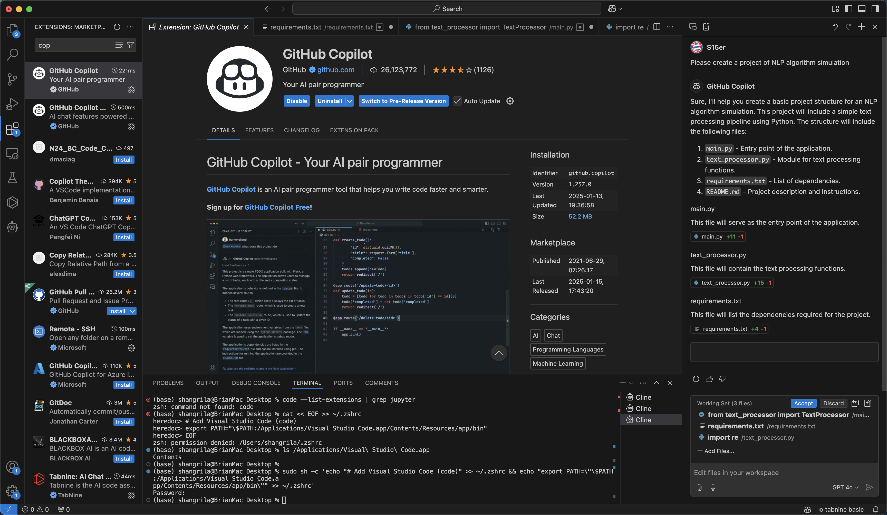
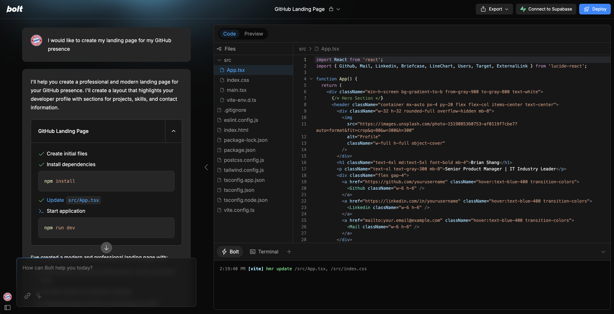
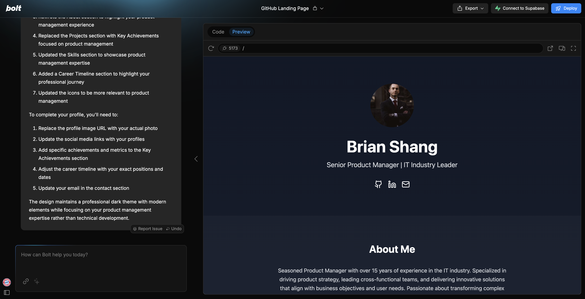

Homework 2#
Group Members:
%%capture
#INCLUDING SCIENTIFIC AND NUMERICAL COMPUTING LIBRARIES
#Run this code to make sure that you have all the libraries at one go.
%pylab inline
import os
import pandas as pd
from IPython.display import Image
from IPython.display import YouTubeVideo
Part 1 Cline#
1. Below is the screenshot after Cline is installed with the options window to set the LLM visible.#
Image("ClineInstall.jpg")

2. Below is the screenshot when DeepSeek API key was set and working properly.#
Image("ClineDeepSeek.jpg", width = 600)
{kind=link}
3. Below is the screenshot of Jupyter extension installation.#
Image("JupyterExtension.jpg")

4. Below is the screen recording of a sample job being completed in VS Code by Cline extension.#
video_id = 'sxILMAK6WDs'
YouTubeVideo(video_id, width=800, height=450)
5. This is the screenshot of notebook after running in VS Code.#
Image("NotebookVSCode.jpg")

6. The total cost for the above job is $0.0009#
7. The file format is a Jupyter notebook with “.ipynb” extension and can be open properly in Jupyter lab environment.#
Image("JupyterLab.jpg", width = 600)
{kind=link}
8. Cline is easy to use and will help a lot in creating Jupyter notebooks and writing in proper structure. Using Cline in VS Code should be more convenient than using in Jupyter since terminal can be easily accessed at the same window.#
Part 2 GitHub Copilot#
Image("Copilot.jpg")

Part 3 Bolt#
Image("BoltCode.jpg")

Image("BoltPreview.jpg")
